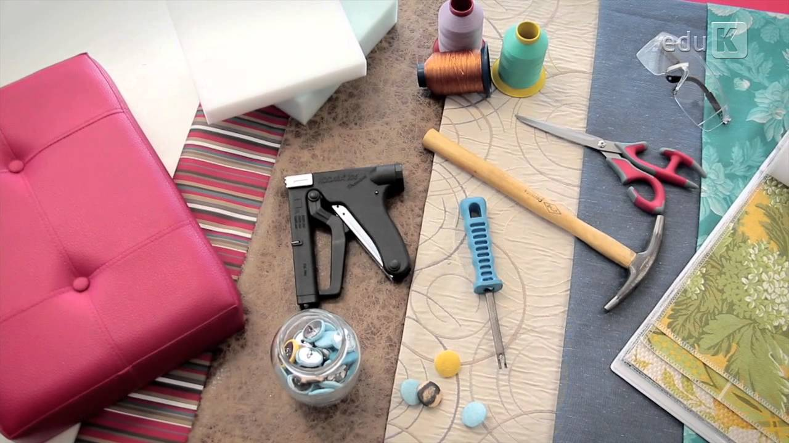

Sobre Arte&Oficio Tapeçaria
Localizada na zona sul de São Paulo a Arte&Oficio Tapeçaria esta no mercado a mais de 45 anos oferecendo o que há de melhor em reforma de estofados. Fundada em 1977, a Arte&Oficio se destaque na cidade e conquista novos clientes a cada dia.
Nossa missão é: "Ser o melhor fornecedor de serviços e estofados, sempre mantendo o alto nível de qualidade e principalmente a satisfação dos clientes por nós atendidos. Isso é o que nos motiva e nos move".
Oferecemos profissionais experientes e antenados às mudanças no mundo da moda. O atendimento possui padrão de excelência e agilidade, garantindo qualidade e satisfação dos nossos clientes.
Nosso estabelecimento
Nosso estabelecimento está localizado no coração da cidade
Benefícios
- Profissionais Qualificados
- Materiais de Qualidade
- Pontualidade no Prazo
- Orçamento facilitado
- Localização
- Frete grátis
- Preço Justo